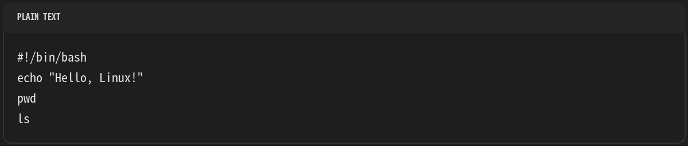
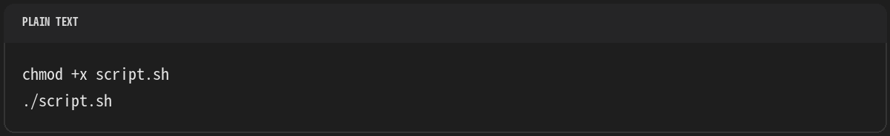
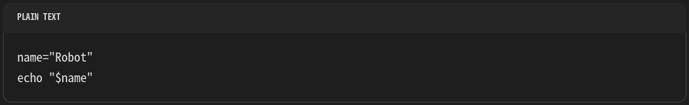
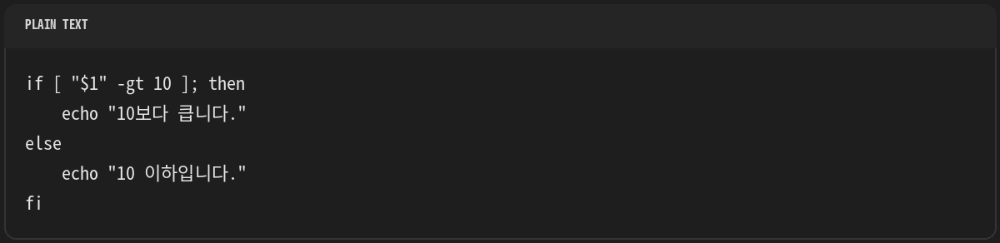
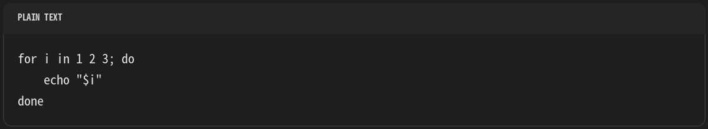
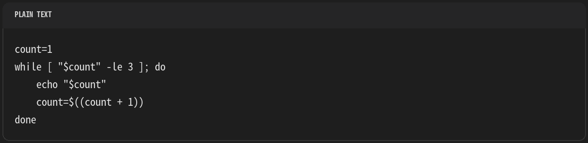
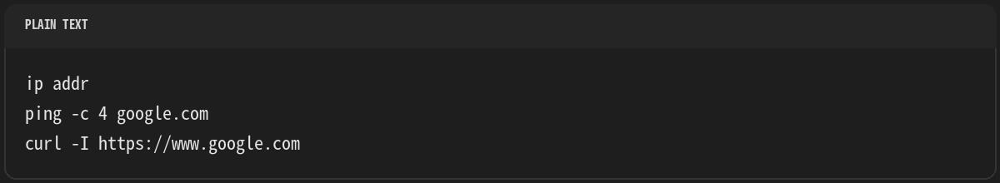
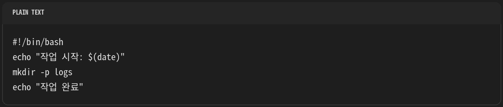

📚 1주차 Linux (2026.10.12 Mon ~ 2026.10.14 Wed)
Total : 3 days
📕 C. Linux Shell Script, Network (2026.10.14 Wed)
📃 a. Shell Script (쉘 스크립트)
- Shell : 사용자가 입력한 명령어를 해석하고 실행하는 프로그램
- Shell Script : 여러 명령어를 파일에 작성하여 순서대로 실행하는 스크립트
- 반복 작업을 자동화하고 시스템 관리에 활용

PLAIN TEXT 코드
#!/bin/bash: Bash로 스크립트를 실행하도록 지정echo: 문자열이나 값을 출력
실행 방법

PLAIN TEXT 코드
📃 b. Variable (변수)
- 변수 : 데이터나 값을 저장하는 이름
- Bash에서는
변수명=값형태로 선언하며,=앞뒤에 공백을 넣지 않음 $변수명또는${변수명}으로 값을 사용

PLAIN TEXT 코드
name="Robot": 변수에 값 저장echo "$name": 변수 값 출력$?: 직전 명령어의 종료 상태 확인 (0은 일반적으로 성공)
📃 c. Conditional (조건문)
- 조건문 : 조건에 따라 서로 다른 명령어를 실행하는 구조
- Bash에서는
if,elif,else사용

PLAIN TEXT 코드
$1: 스크립트 실행 시 전달한 첫 번째 인자gt: 숫자가 크다는 의미fi:if문 종료
📃 d. Loop (반복문)
- 반복문 : 같은 작업을 여러 번 실행하는 구조
for: 정해진 대상이나 범위를 반복while: 조건이 참인 동안 반복

PLAIN TEXT 코드

PLAIN TEXT 코드
📃 e. Network (네트워크)
- Network : 컴퓨터와 장치가 데이터를 주고받는 연결 구조
- IP Address : 네트워크에서 장치를 식별하는 주소
- Port : 장치 내에서 통신 대상 프로그램을 구분하는 번호
- DNS : 도메인 이름을 IP 주소로 변환하는 시스템
| 명령어 | 기능 |
|---|---|
ip addr | 네트워크 인터페이스 및 IP 확인 |
ping 주소 | 네트워크 연결 확인 |
curl 주소 | 서버에 요청을 보내 응답 확인 |
ss -tuln | 열려 있는 TCP/UDP 포트 확인 |
hostname | 컴퓨터 이름 확인 |

PLAIN TEXT 코드
📃 f. CRUD (Create, Read, Update, Delete)
- CRUD : 데이터를 생성·조회·수정·삭제하는 기본 작업
- 파일 관리, 데이터베이스, API 등에서 널리 사용되는 개념
| 작업 | 의미 | Linux 예시 |
|---|---|---|
| Create | 생성 | touch file.txt |
| Read | 조회 | cat file.txt |
| Update | 수정 | nano file.txt |
| Delete | 삭제 | rm file.txt |
※ CRUD의 일반적인 약자는 Create, Read, Update, Delete입니다. 강의 목차의 Undo는 일반적으로 Update를 의미하는 것으로 보입니다.
📃 g. Automation (자동화)
- Automation : 반복적인 작업을 자동으로 실행하도록 구성하는 것
- Shell Script와 반복문을 활용해 여러 명령어를 한 번에 실행 가능
cron: 특정 시간이나 주기에 맞춰 작업을 실행하는 스케줄러

PLAIN TEXT 코드
$(date): 현재 날짜와 시간을 명령어 결과로 삽입mkdir -p logs:logs폴더가 없으면 생성
💡 활용 예시
- 로그 파일 정리
- 시스템 상태 점검
- 파일 백업
- 개발 환경 초기 설정
💡 핵심 요약
- Shell Script : 여러 Linux 명령어를 하나의 파일로 실행
- Variable : 데이터 저장 및 재사용
- Conditional & Loop : 조건에 따른 실행과 반복 작업 구현
- Network : IP, 포트, DNS 및 연결 상태 이해
- CRUD : 데이터 생성·조회·수정·삭제
- Automation : 스크립트와 스케줄러를 활용한 반복 작업 자동화
🎯 학습 목표: Shell Script로 변수·조건문·반복문을 활용하고, 기본적인 네트워크 상태를 확인하며, 반복 작업을 자동화할 수 있다.